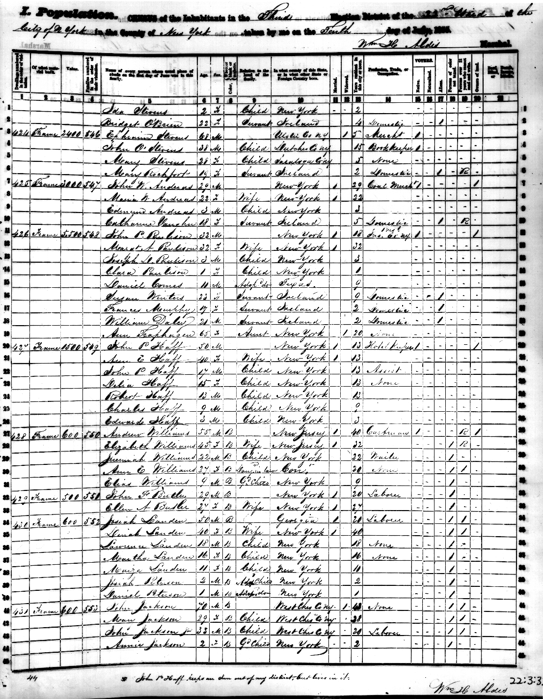

Page from the 1855 New York State Census The 1855 census was the last census before Seneca Village was destroyed to build Central Park.
(enlarge window and scroll to see entire census page)

Source: New-York Historical Society